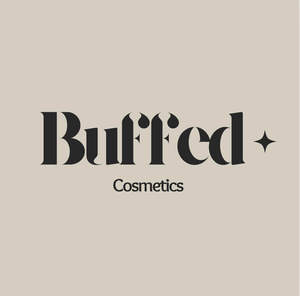

Trade Mark Journal No.2025/010 7 March 2025
UK00004164753 24 February 2025 (3,18,21,25)

- Class 3
- Cosmetics; Skincare cosmetics; Moisturisers [cosmetics]; Cosmetics and cosmetic preparations; Skin fresheners [cosmetics]; Cosmetics for eye-lashes; Anti-aging moisturizers used as cosmetics; Organic cosmetics; Non-medicated cosmetics; Lip cosmetics; Skin moisturizers used as cosmetics; Natural cosmetics; Make-up palettes containing cosmetics; Cosmetics in the form of lotions; Facial creams [cosmetics]; Beauty care cosmetics; Eyebrow cosmetics; Decorative cosmetics; Multifunctional cosmetics; Milks [cosmetics]; Eye cosmetics; Body creams [cosmetics]; Skin masks [cosmetics]; Cosmetics for eye-brows; Skin care cosmetics; Fluid creams [cosmetics]; Cosmetics in the form of creams; Powder compacts [cosmetics]; Colour cosmetics for the skin; Cosmetics for use on the skin; Cosmetic moisturisers; Cosmetic creams and lotions; Night creams [cosmetics]; Lip stains [cosmetics]; Creams (Cosmetic -); Cosmetic creams; Cosmetics in the form of powders; Beauty lotions; Cosmetic facial lotions; Facial lotions [cosmetic]; Anti-aging creams [for cosmetic use]; Smoothing emulsions [cosmetics]; Anti-ageing creams [for cosmetic use]; Skin cleansers [cosmetic]; Perfumed powders [for cosmetic use]; Liners [cosmetics] for the eyes; Moisturising skin lotions [cosmetic]; Cosmetic creams for the skin; Skin creams [cosmetic]; Skin creams [for cosmetic use].
- Class 18
- Bags; Tote bags; Toiletry bags; Make-up bags; Cosmetic bags; Makeup bags.
- Class 21
- Cosmetics brushes; Applicators for cosmetics; Cosmetics applicators; Containers for cosmetics; Dispensers for cosmetics; Racks for cosmetics; Holders for cosmetics.
- Class 25
- Clothing; Clothes; Tops [clothing].
Victoria Louise Robinson